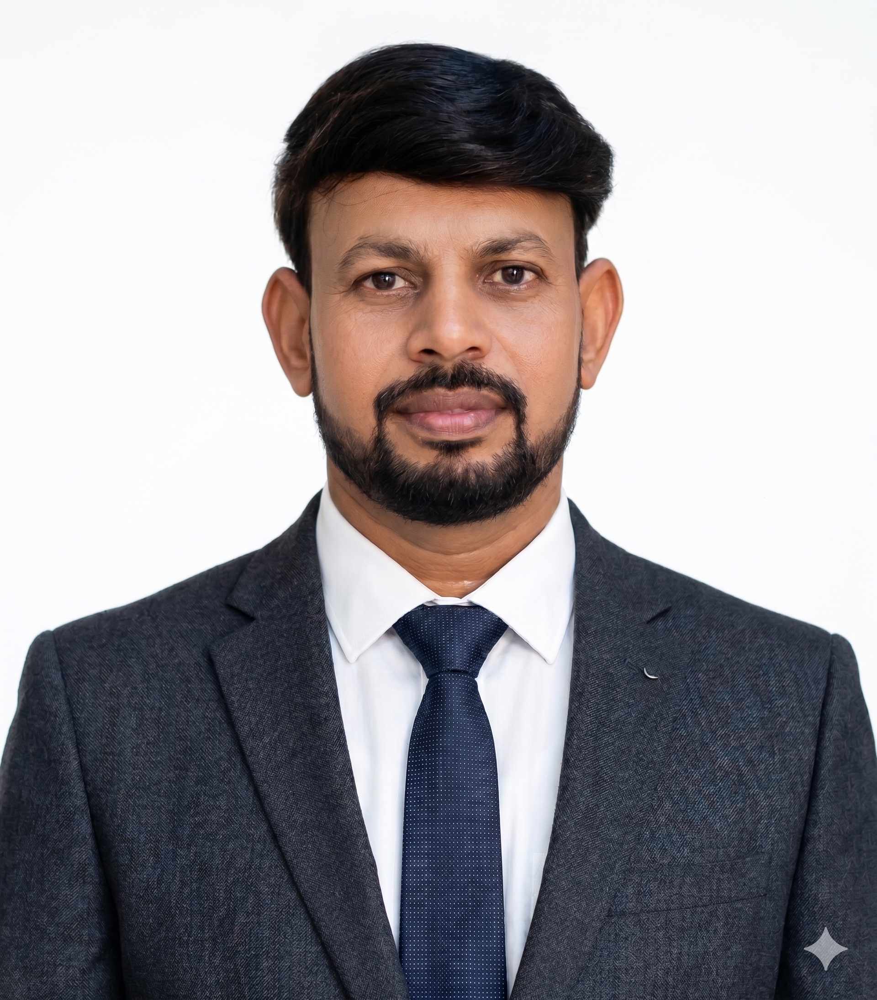

PROFILE
About
Computer Science academic, researcher and educator with a focus on emerging technologies, applied research and student-centered learning.

Academic Profile
Dr. Suresh Palarimath
Program Coordinator & Lecturer, Computer Science / IT
University of Technology and Applied Sciences, Salalah, Oman
Professional Summary
Dr. Suresh Palarimath is a Computer Science academic with over 18 years of international teaching and academic leadership experience across Oman, India and Papua New Guinea.
His academic work combines teaching, research, curriculum development, student supervision and institutional service. He has taught undergraduate and postgraduate courses in Artificial Intelligence, Machine Learning, Data Science, Data Structures, Computer Networks, Software Engineering, Cloud Computing, IoT and Cybersecurity.
He has secured more than $96,000 in research funding, published 76+ peer-reviewed articles, authored 26+ textbooks and holds 14 international patents. His experience also includes academic leadership, accreditation activities, academic advising and research supervision.
Research Interests
- Artificial Intelligence & Machine Learning
- Artificial Intelligence in Education
- Data Science and Intelligent Systems
- Smart Campus Systems
- IoT-based Intelligent and Assistive Technologies
- Software Engineering and Emerging Technologies
- Cybersecurity and applied computing
Teaching & Academic Leadership
Dr. Palarimath's teaching approach combines theoretical understanding with practical, project-oriented learning. His experience includes curriculum planning, accreditation, course coordination, student mentoring and supervision of research projects leading to publications and conference presentations.
He has also served in academic leadership roles, including Head of School and Head of Department, and currently contributes to student development and institutional academic activities at UTAS Salalah.